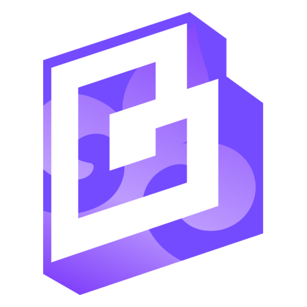

Помочь системе образования Казахстана применять искусственный интеллект ответственно, сохраняя академическую честность, конфиденциальность и самостоятельность мышления.
О проекте
ChatGPT EDU для системы образования Казахстана
Корпоративное рабочее пространство с современными ИИ-инструментами для педагогов, исследователей, студентов и образовательных организаций.

165 000лицензий в масштабе проекта
30 марта 2026запуск программы
0 ₸стоимость доступа для пользователя
Цель и миссия
Внедрить ChatGPT EDU в образовательный процесс, обучить практическому применению ИИ и повысить качество подготовки специалистов для цифровой экономики Казахстана.
Пользователи
Педагоги и преподаватели
Готовят учебные материалы, задания и персональные GPT-ассистенты, работают с документами и данными.
Исследователи и учёные
Проводят обзор литературы, анализируют данные, редактируют публикации и готовят грантовые заявки.
Студенты
Осваивают технологии, разрабатывают проекты и решают профессиональные задачи с соблюдением академической честности.
Администраторы организаций
Ведут списки пользователей, выдают учётные данные и управляют доступом на уровне организации.
Стейкхолдеры проекта
Freedom Holding
Оплата лицензий и сопровождения проекта.
Freedom Bank
Участие в предусмотренной проектом верификации.
OpenAI
Предоставление лицензий и поддержка оператора.
Bilim Upskill
Подключение лицензий, ИИ-методология и поддержка пользователей.
МИИЦР, МП и МНВО
Координация направления, администраторов и политики применения ИИ.
Администраторы
Управление учётными записями и передача доступа пользователям.
Принципы доступа
Доступ без оплаты
Пользователь получает корпоративный уровень ChatGPT EDU за 0 ₸.
Конфиденциальность
Запросы остаются внутри рабочего пространства организации.
Защита данных
Запросы и данные не используются для обучения моделей OpenAI.
Управление организацией
Учётные записи и доступы администрируются централизованно.
Практическая работа
Как применяют ChatGPT EDU
Инструменты помогают в повседневной работе, обучении и исследовательских проектах.
Учебные материалы
Лекции, тесты, задания, силлабусы и GPT-ассистенты.
Гранты и отчёты
Заявки на финансирование и научные отчёты.
Научные статьи
Подготовка, редактирование, перевод и обзор литературы.
Анализ данных
Код, визуализация, статистический анализ и интерпретация результатов.
Языковая поддержка
Перевод и редактирование материалов для международной коммуникации.
Документация
Протоколы, официальные письма, приказы и рабочие документы.